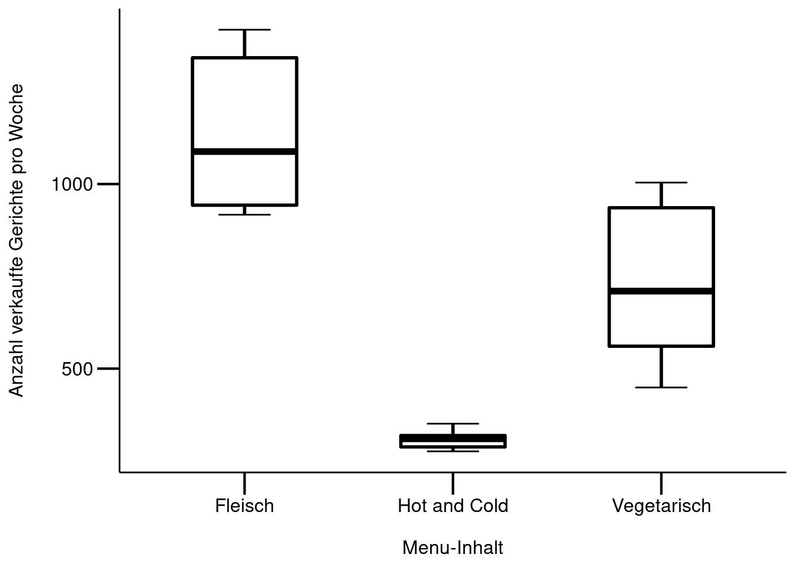
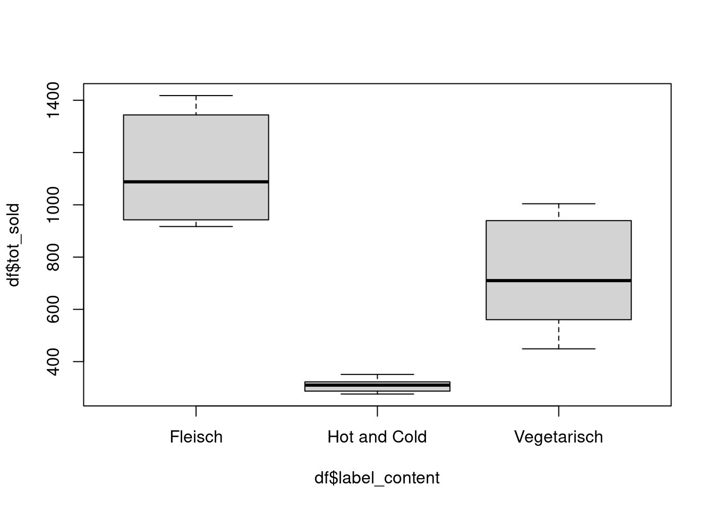
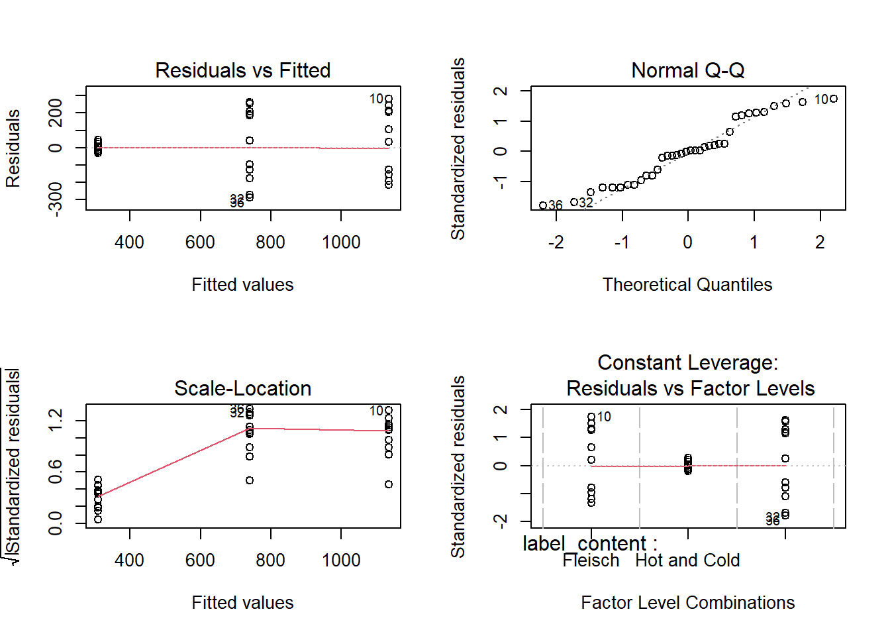
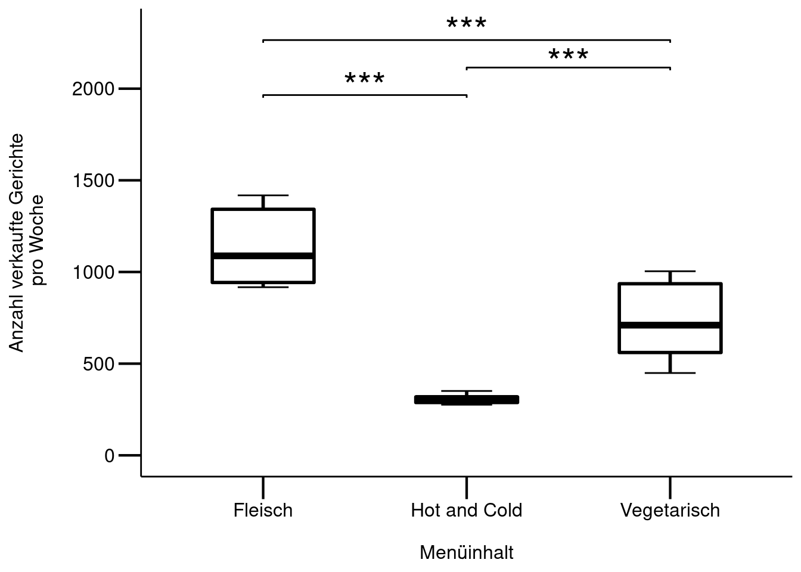
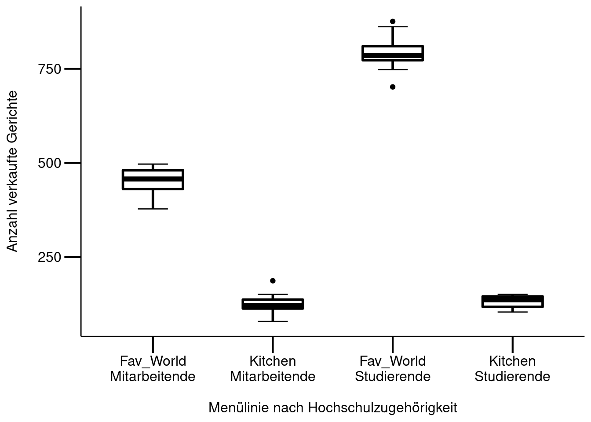
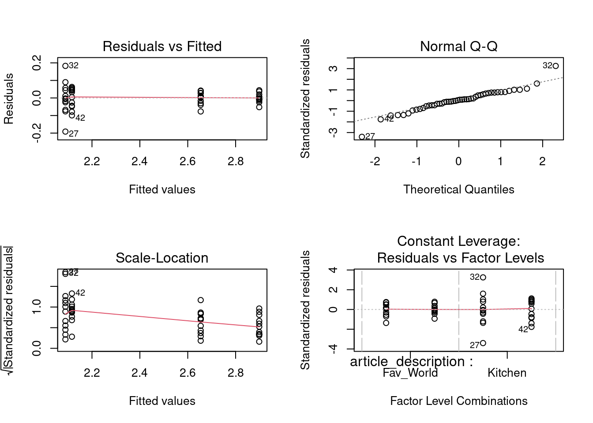
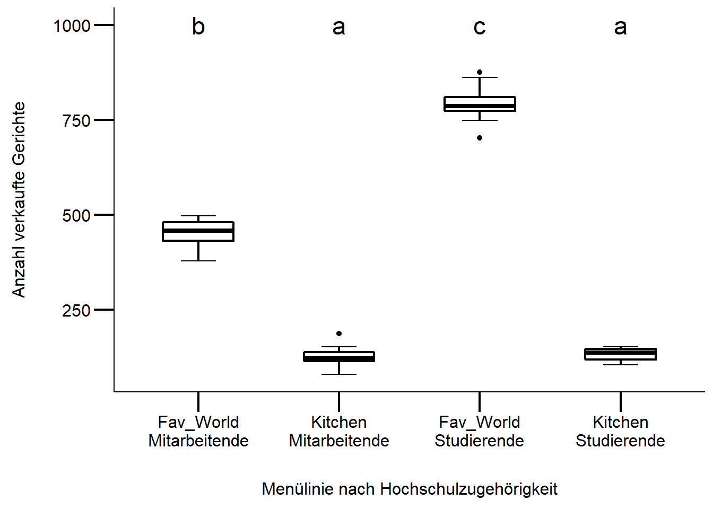

Stat2: Lösung 2.2 & 2.3S
Download R-Skript
Musterlösung Übung 2.2
Kommentierter Lösungsweg
df <- nova # klone den originaler Datensatz
# fasst die vier Inhalte der Gerichte zu drei Inhalten zusammen.
df %<>%
# Geflügel & Fisch zu fleischgerichte zählen
mutate(label_content = str_replace(label_content, "Geflügel|Fisch", "Fleisch")) %>%
# achtung reihenfolge spielt eine rolle, wegen des + (plus)
mutate(label_content = str_replace(label_content, "Pflanzlich[+]|Pflanzlich", "Vegetarisch"))
# gruppiert Daten nach Menü-Inhalt und Woche
df %<>%
group_by(label_content, week) %>%
summarise(tot_sold = n()) %>%
drop_na() %>%
ungroup() # lasst die unbekannten Menü-Inhalte weg
# überprüft die Voraussetzungen für eine ANOVA
# Schaut euch die Verteilungen der Mittelwerte an (plus Standardabweichungen)
# Sind Mittelwerte nahe bei Null?
# Gäbe uns einen weiteren Hinweis auf eine spezielle Binomail-Verteilung
df %>%
split(.$label_content) %>% # teilt den Datensatz in 3 verschiedene Datensätze auf
purrr::map(~ psych::describe(.$tot_sold)) # mit map können andere Funktionen $Fleisch
vars n mean sd median trimmed mad min max range skew kurtosis
X1 1 12 1135.58 200.03 1088 1129.2 223.13 917 1418 501 0.19 -1.89
se
X1 57.74
$`Hot and Cold`
vars n mean sd median trimmed mad min max range skew kurtosis se
X1 1 12 308.33 23.53 310 307.3 30.39 276 351 75 0.32 -1.25 6.79
$Vegetarisch
vars n mean sd median trimmed mad min max range skew kurtosis
X1 1 12 739.25 213.54 710 741.8 323.95 449 1004 555 -0.01 -1.85
se
X1 61.64# auf den Datensatz angewendet werden (alternative Funktionen sind aggregate oder apply)
# Boxplot
ggplot(df, aes(x = label_content, y= tot_sold)) +
# Achtung: Reihenfolge spielt hier eine Rolle!
stat_boxplot(geom = "errorbar", width = 0.25) +
geom_boxplot(fill="white", color = "black", size = 1, width = .5) +
labs(x = "\nMenü-Inhalt", y = "Anzahl verkaufte Gerichte pro Woche\n") +
# achtung erster Hinweis einer Varianzheterogenität, wegen den Hot&Cold Gerichten
mytheme
#alternative mit base
boxplot(df$tot_sold~df$label_content)
# definiert das Modell (vgl. Skript Statistik 2)
model <- aov(tot_sold ~ label_content, data = df)
summary.lm(model)
Call:
aov(formula = tot_sold ~ label_content, data = df)
Residuals:
Min 1Q Median 3Q Max
-290.250 -135.083 1.667 125.500 282.417
Coefficients:
Estimate Std. Error t value Pr(>|t|)
(Intercept) 1135.58 48.92 23.211 < 2e-16 ***
label_contentHot and Cold -827.25 69.19 -11.956 1.54e-13 ***
label_contentVegetarisch -396.33 69.19 -5.728 2.15e-06 ***
---
Signif. codes: 0 '***' 0.001 '**' 0.01 '*' 0.05 '.' 0.1 ' ' 1
Residual standard error: 169.5 on 33 degrees of freedom
Multiple R-squared: 0.8125, Adjusted R-squared: 0.8012
F-statistic: 71.52 on 2 and 33 DF, p-value: 1.007e-12# überprüft die Modelvoraussetzungen
par(mfrow = c(2,2))
plot(model)


Fazit: Inspektion der Modellvoraussetzung zeigt klare Verletzungen des Residualplots (zeigt einen “Trichter”, siehe Skript Statistik 2), D.h. die Voraussetzung der Homoskedastizität sind verletzt. Mögliche nächste Schritte:
- Menüinhalt “Buffet” aus der Analyse ausschliessen, da sowieso kein richtiger Menüinhalt (aber Informationsverlust)
- Datentransformation z.B. log-Transformation
- nicht-parametrischer Test (Achtung, auch dieser setzt Voraussetzungen voraus)
- ein glm Model (general linear model) mit einer poisson/quasipoisson link Funktion (vgl. Skript Statistik 4), weitere Infos dazu Link
# überprüft die Voraussetzungen des Welch-Tests:
# Gibt es eine hohe Varianzheterogenität und ist die relative Verteilung der
# Residuen gegeben? (siehe Statistik 2)
# Ja Varianzheterogenität ist gegeben, aber die Verteilung der Residuen folgt
# einem "Trichter", also keiner "normalen/symmetrischen" Verteilung um 0
# Daher ziehe ich eine Transformation der AV einem nicht-parametrischen Test vor
# für weitere Infos:
# https://data.library.virginia.edu/interpreting-log-transformations-in-a-linear-model/
# achtung hier log10, bei Rücktransformation achten
model_log <- aov(log10(tot_sold) ~ label_content, data = df)
par(mfrow = c(2,2))
plot(model_log) # scheint ok zu sein
summary.lm(model_log) # Referenzkategorie ist Fleisch
Call:
aov(formula = log10(tot_sold) ~ label_content, data = df)
Residuals:
Min 1Q Median 3Q Max
-0.198920 -0.059343 0.003477 0.062579 0.150567
Coefficients:
Estimate Std. Error t value Pr(>|t|)
(Intercept) 3.04908 0.02585 117.942 < 2e-16 ***
label_contentHot and Cold -0.56121 0.03656 -15.350 < 2e-16 ***
label_contentVegetarisch -0.19792 0.03656 -5.413 5.45e-06 ***
---
Signif. codes: 0 '***' 0.001 '**' 0.01 '*' 0.05 '.' 0.1 ' ' 1
Residual standard error: 0.08956 on 33 degrees of freedom
Multiple R-squared: 0.8802, Adjusted R-squared: 0.8729
F-statistic: 121.2 on 2 and 33 DF, p-value: 6.238e-16TukeyHSD(model_log) # (vgl. Statistik 2) Tukey multiple comparisons of means
95% family-wise confidence level
Fit: aov(formula = log10(tot_sold) ~ label_content, data = df)
$label_content
diff lwr upr p adj
Hot and Cold-Fleisch -0.5612085 -0.6509215 -0.4714955 0.0e+00
Vegetarisch-Fleisch -0.1979175 -0.2876305 -0.1082044 1.6e-05
Vegetarisch-Hot and Cold 0.3632910 0.2735780 0.4530041 0.0e+00# Achtung Beta-Werte resp. Koeffinzienten sind nicht direkt interpretierbar
# sie müssten zuerst wieder zurück transformiert werden, hier ein Beispiel dafür:
# für Fleisch
10^model_log$coefficients[1](Intercept)
1119.655 # für Hot & Cold,
10^(model_log$coefficients[1] + model_log$coefficients[2])(Intercept)
307.5216 # ist equivalent zu
10^(model_log$coefficients[1]) * 10^(model_log$coefficients[2])(Intercept)
307.5216 # für Vegi
10^(model_log$coefficients[1] + model_log$coefficients[3])(Intercept)
709.8501 
Methoden
Ziel war es, die Unterschiede in den wöchentlichen Verkaufszahlen pro Menüinhalt aufzuzeigen. Da die Responsevariable (Verkaufszahlen) “metrisch” und die Prädiktorvariable kategorial sind, wurde eine einfaktorielle ANOVA gerechnet. Die visuelle Inspektion des Modells zeigte insbesondere schwere Verletzungen der Homoskedastizität. Der Boxplot bestätigt dieser Befund. Weil die Voraussetzungen schwer verletzt sind, wurde eine log-Transformation der Responsevariable vorgenommen. Anschliessend wurde erneut eine ANOVA gerechnet und die Modelvoraussetzungen visuell inspiziert: Homoskedastizität und Normalverteilung der Residuen sind gegeben. Für mehr Informatinen zu log-Transformationen und Darstellung der Ergebnisse findet ihr hier
Ergebnisse
Die Menüinhalte (Fleisch, Vegetarisch und Buffet) unterscheiden sich in den wöchentlichen Verkaufszahlen signifikant (F(2,15) = 121.22, p < .001). Die Abbildung 1 zeigt die wöchentlichen Verkaufszahlen pro Menüinhalt.

Musterlösung Übung 2.3S (SozWis)
- Lese-Empfehlung Kapitel 7 von Manny Gimond
Kommentierter Lösungsweg
Download 2017_ZHAW_individual_menu_sales_NOVANIMAL.csv
$Fav_World
vars n mean sd median trimmed mad min max range skew kurtosis se
X1 1 24 622.67 178.79 599.5 620.8 253.52 378 876 498 0.04 -1.88 36.5
$Kitchen
vars n mean sd median trimmed mad min max range skew kurtosis se
X1 1 24 128.5 22.21 124.5 128.2 23.72 79 187 108 0.27 0.43 4.53
# definiert das Modell (Skript Statistik 2)
model <- aov(tot_sold ~ article_description * member, data = df)
summary.lm(model)
Call:
aov(formula = tot_sold ~ article_description * member, data = df)
Residuals:
Min 1Q Median 3Q Max
-91.00 -17.33 0.50 14.83 83.00
Coefficients:
Estimate Std. Error t value
(Intercept) 452.333 9.734 46.47
article_descriptionKitchen -327.000 13.766 -23.75
memberStudierende 340.667 13.766 24.75
article_descriptionKitchen:memberStudierende -334.333 19.469 -17.17
Pr(>|t|)
(Intercept) <2e-16 ***
article_descriptionKitchen <2e-16 ***
memberStudierende <2e-16 ***
article_descriptionKitchen:memberStudierende <2e-16 ***
---
Signif. codes: 0 '***' 0.001 '**' 0.01 '*' 0.05 '.' 0.1 ' ' 1
Residual standard error: 33.72 on 44 degrees of freedom
Multiple R-squared: 0.9864, Adjusted R-squared: 0.9855
F-statistic: 1063 on 3 and 44 DF, p-value: < 2.2e-16# überprüft die Modelvoraussetzungen (Statistik 2)
par(mfrow = c(2,2)) # alternativ gäbe es die ggfortify::autoplot(model) funktion
plot(model)
Fazit: Die Inspektion des Modells zeigt kleinere Verletzungen bei der Normalverteilung der Residuen (Q-Q Plot). Aufgrund keiner starken Verbesserung durch eine Transformation der Responsevariable, entscheide ich mich für eine ANOVA ohne log-tranformierten Responsevariablen (AV).
# sieht aus, als ob die Voraussetzungen für eine Anova nur geringfügig verletzt sind
# mögliche alternativen:
# 0. keine Tranformation der AV (machen wir hier)
# 1. log-transformation um die grossen werte zu minimieren (nur möglich, wenn
# keine 0 enthalten sind und die Mittelwerte weit von 0 entfernt sind (bei uns wäre dieser Fall erfüllt)
# => bei Zähldaten ist dies leider nicht immer gegeben)
# 2. nicht parametrische Test z.B. Welch-Test, wenn hohe Varianzheterogenität
# zwischen den Residuen
#0) keine Tranformation
# post-hov Vergleiche
TukeyHSD(model) Tukey multiple comparisons of means
95% family-wise confidence level
Fit: aov(formula = tot_sold ~ article_description * member, data = df)
$article_description
diff lwr upr p adj
Kitchen-Fav_World -494.1667 -513.785 -474.5484 0
$member
diff lwr upr p adj
Studierende-Mitarbeitende 173.5 153.8817 193.1183 0
$`article_description:member`
diff lwr upr
Kitchen:Mitarbeitende-Fav_World:Mitarbeitende -327.000000 -363.75650 -290.24350
Fav_World:Studierende-Fav_World:Mitarbeitende 340.666667 303.91017 377.42317
Kitchen:Studierende-Fav_World:Mitarbeitende -320.666667 -357.42317 -283.91017
Fav_World:Studierende-Kitchen:Mitarbeitende 667.666667 630.91017 704.42317
Kitchen:Studierende-Kitchen:Mitarbeitende 6.333333 -30.42317 43.08983
Kitchen:Studierende-Fav_World:Studierende -661.333333 -698.08983 -624.57683
p adj
Kitchen:Mitarbeitende-Fav_World:Mitarbeitende 0.0000000
Fav_World:Studierende-Fav_World:Mitarbeitende 0.0000000
Kitchen:Studierende-Fav_World:Mitarbeitende 0.0000000
Fav_World:Studierende-Kitchen:Mitarbeitende 0.0000000
Kitchen:Studierende-Kitchen:Mitarbeitende 0.9672944
Kitchen:Studierende-Fav_World:Studierende 0.0000000#1) Alterativ: log-transformation
model_log <- aov(log10(tot_sold) ~ article_description * member, data = df)
summary.lm(model_log) # interaktion ist nun nicht mehr signifikant: vgl.
Call:
aov(formula = log10(tot_sold) ~ article_description * member,
data = df)
Residuals:
Min 1Q Median 3Q Max
-0.191372 -0.025043 0.003191 0.037604 0.182842
Coefficients:
Estimate Std. Error t value
(Intercept) 2.65417 0.01696 156.533
article_descriptionKitchen -0.56517 0.02398 -23.569
memberStudierende 0.24438 0.02398 10.191
article_descriptionKitchen:memberStudierende -0.21726 0.03391 -6.407
Pr(>|t|)
(Intercept) < 2e-16 ***
article_descriptionKitchen < 2e-16 ***
memberStudierende 3.71e-13 ***
article_descriptionKitchen:memberStudierende 8.51e-08 ***
---
Signif. codes: 0 '***' 0.001 '**' 0.01 '*' 0.05 '.' 0.1 ' ' 1
Residual standard error: 0.05874 on 44 degrees of freedom
Multiple R-squared: 0.9745, Adjusted R-squared: 0.9728
F-statistic: 561.4 on 3 and 44 DF, p-value: < 2.2e-16# nochmals euren Boxplot zu beginn, machen diese Koeffizienten sinn?
# überprüft die Modelvoraussetzungen (vgl. Skript Statistik 2)
# bringt aber keine wesentliche Verbesserung, daher bleibe ich bei den
# untranfromierten Daten
par(mfrow = c(2,2))
plot(model_log)
# post-hov Vergleiche
TukeyHSD(model_log) # gibt sehr ähnliche Resultate im Vergleich zum nicht-transformierten Model Tukey multiple comparisons of means
95% family-wise confidence level
Fit: aov(formula = log10(tot_sold) ~ article_description * member, data = df)
$article_description
diff lwr upr p adj
Kitchen-Fav_World -0.6738029 -0.7079755 -0.6396302 0
$member
diff lwr upr p adj
Studierende-Mitarbeitende 0.1357518 0.1015791 0.1699244 0
$`article_description:member`
diff lwr
Kitchen:Mitarbeitende-Fav_World:Mitarbeitende -0.56517128 -0.62919652
Fav_World:Studierende-Fav_World:Mitarbeitende 0.24438333 0.18035809
Kitchen:Studierende-Fav_World:Mitarbeitende -0.53805110 -0.60207634
Fav_World:Studierende-Kitchen:Mitarbeitende 0.80955461 0.74552937
Kitchen:Studierende-Kitchen:Mitarbeitende 0.02712017 -0.03690507
Kitchen:Studierende-Fav_World:Studierende -0.78243444 -0.84645968
upr p adj
Kitchen:Mitarbeitende-Fav_World:Mitarbeitende -0.50114604 0.0000000
Fav_World:Studierende-Fav_World:Mitarbeitende 0.30840857 0.0000000
Kitchen:Studierende-Fav_World:Mitarbeitende -0.47402586 0.0000000
Fav_World:Studierende-Kitchen:Mitarbeitende 0.87357985 0.0000000
Kitchen:Studierende-Kitchen:Mitarbeitende 0.09114541 0.6726112
Kitchen:Studierende-Fav_World:Studierende -0.71840920 0.0000000
Methode
Ziel war es die Unterschiede zwischen den preisgünstigeren und teureren Menülinien und der Hochschulzugehörigkeit herauszufinden: Hierfür wurde eine ANOVA mit Interaktion gerechnet, da wir eine (quasi)-metrische Responsevariable und zwei Prädiktorvariablen (Menülinie und Hochschulzugehörigkeit) haben.
Die Voraussetzungen für eine ANOVA waren im ersten Model nicht stark verletzt, lediglich die Normalverteilung der Residuen: Deshalb habe wurde auf eine log-Transformation der Responsevariable verzichtet. Anschliessend wurden noch post-hoc Einzelvergleiche nach Tukey durchgeführt.
Kleiner Exkurs: Verkaufsdaten sind Zähldaten und perse binomial-Verteilt, da es keine negativen Werte geben kann. Ich versuche immer folgende Fragen zu beantworten:
- Wie weit ist der Mittelwert von “Null entfernt”? -> Wenn ja uns keine Voraussetzungen zur Normalverteilung gibt, kann auch eine Normalverteilung angenommen werden
- Beinhalten die Daten viele “Null’s”? -> Wenn ja muss eine spezielle binomial Verteilung angenommen werden, z.B. negative binomiale Transformation mit GLM (see Skript XY)
Ergebnisse
Die wöchentlichen Verkaufszahlen der Menülinien unterscheiden sich nach Hochschulzugehörigkeit signifikant (F(3,44) = 561.42, p < .001). Inhaltich bedeutet dies, dass Studierende signifikant häufiger die preisgünstigere Menülinie “Favorite & World” als Mitarbeitende kaufen. Entgegen der Annahme gibt es aber keine signifikanten Unterschiede zwischen Studierende und Mitarbeitende bei dem Kauf der teureren Menülinie “Kitchen”. Über die möglichen Gründe können nur spekuliert werden, hierfür bedarf es weiteren Analysen z.B. mit dem Prädiktor “Menüinhalt”.
